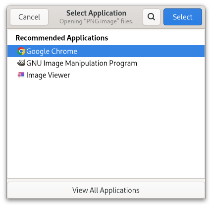

Gtk.AppChooserDialog¶
Example¶

- Subclasses:
None
Methods¶
- Inherited:
Gtk.Dialog (11), Gtk.Window (64), Gtk.Widget (183), GObject.Object (37), Gtk.Accessible (17), Gtk.Buildable (1), Gtk.Native (6), Gtk.Root (3), Gtk.AppChooser (3)
- Structs:
class |
|
class |
|
|
|
|
|
|
Virtual Methods¶
Properties¶
Name |
Type |
Flags |
Short Description |
|---|---|---|---|
r/w/co |
|||
r/w/en |
Signals¶
- Inherited:
Gtk.Dialog (2), Gtk.Window (5), Gtk.Widget (13), GObject.Object (1)
Fields¶
- Inherited:
Gtk.Dialog (2), Gtk.Window (5), Gtk.Widget (13), GObject.Object (1)
Class Details¶
- class Gtk.AppChooserDialog(*args, **kwargs)¶
- Bases:
- Abstract:
No
GtkAppChooserDialogshows aGtkAppChooserWidgetinside aGtkDialog.<picture> <source srcset=”appchooserdialog-dark.png” media=”(prefers-color-scheme: dark)”> <img alt=”An example
Gtk.AppChooserDialog" src=”appchooserdialog.png”> </picture>Note that
GtkAppChooserDialogdoes not have any interesting methods of its own. Instead, you should get the embeddedGtkAppChooserWidgetusing [method`Gtk`.AppChooserDialog.get_widget] and call its methods if the generic [iface`Gtk`.AppChooser] interface is not sufficient for your needs.To set the heading that is shown above the
GtkAppChooserWidget, use [method`Gtk`.AppChooserDialog.set_heading].- CSS nodes
GtkAppChooserDialoghas a single CSS node with the namewindowand style class.appchooser.Deprecated since version 4.10: The application selection widgets should be implemented according to the design of each platform and/or application requiring them.
- classmethod new(parent, flags, file)[source]¶
- Parameters:
parent (
Gtk.WindoworNone) – aGtkWindowflags (
Gtk.DialogFlags) – flags for this dialogfile (
Gio.File) – aGFile
- Returns:
a newly created
GtkAppChooserDialog- Return type:
Creates a new
GtkAppChooserDialogfor the providedGFile.The dialog will show applications that can open the file.
Deprecated since version 4.10: This widget will be removed in GTK 5
- classmethod new_for_content_type(parent, flags, content_type)[source]¶
- Parameters:
parent (
Gtk.WindoworNone) – aGtkWindowflags (
Gtk.DialogFlags) – flags for this dialogcontent_type (
str) – a content type string
- Returns:
a newly created
GtkAppChooserDialog- Return type:
Creates a new
GtkAppChooserDialogfor the provided content type.The dialog will show applications that can open the content type.
Deprecated since version 4.10: This widget will be removed in GTK 5
- get_heading()[source]¶
- Returns:
the text to display at the top of the dialog, or
None, in which case a default text is displayed- Return type:
Returns the text to display at the top of the dialog.
Deprecated since version 4.10: This widget will be removed in GTK 5